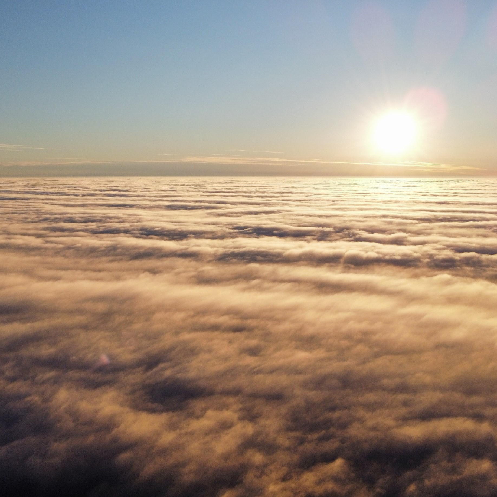
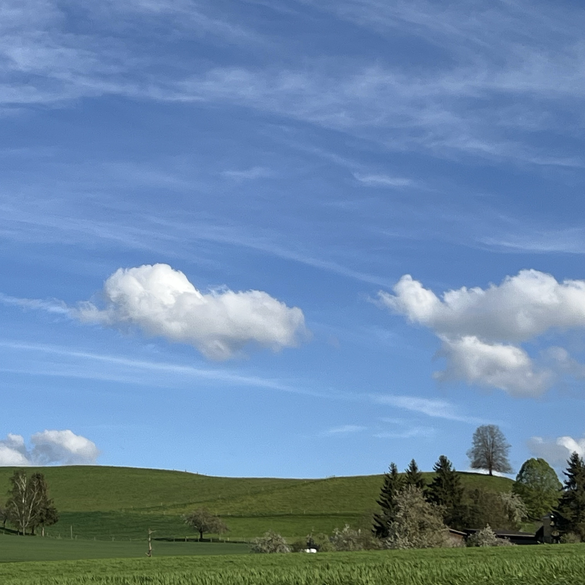
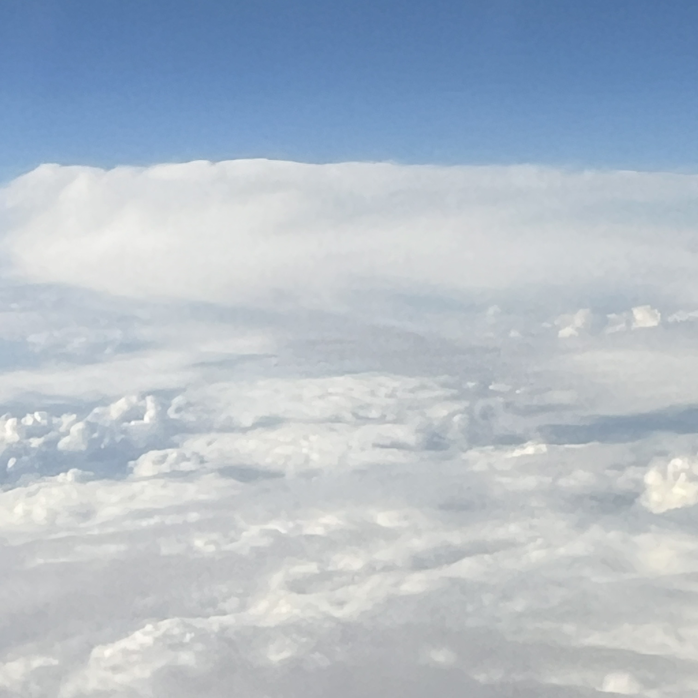
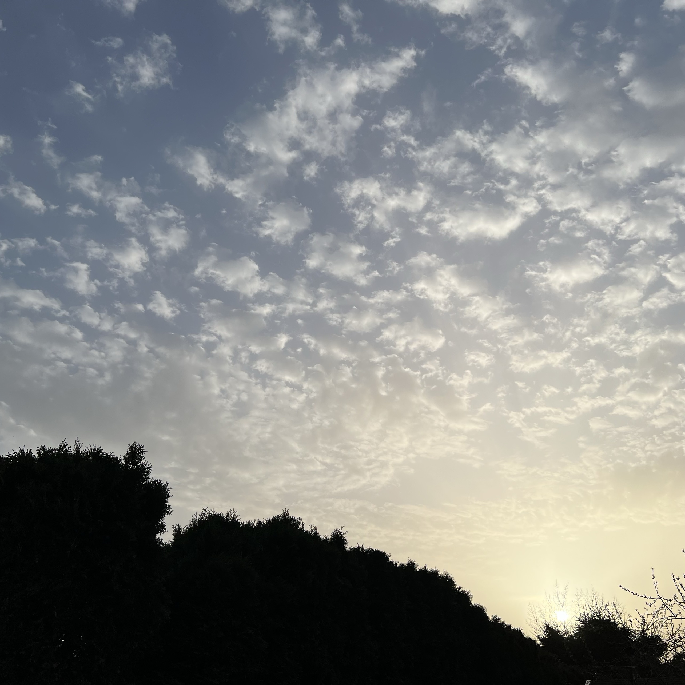

Pink Cloud, spotted on a late afternoon
That was around the time I left the others on the field to walk around. The park was pretty dense. I remember lots of bushes next to pathways and fields of flowers. It was when I was heading back to the centre of the park, where the fountain stands and where the gap in the trees opens up a view of the sky.
Clouds of farlands
Beyond the view lies the end of the world. So you could say if you like fantasy stories.
A Picture of land and a sky
I took this picutre on a windy day. In the picture you can see green grassfields, stretching to far horizon. Few lonely trees grow slowly with time. And in the background, fast moving clouds take their place on a windy day.
Ether
According to dictionaries, it's the medium beyond the clouds. According to picture, it looks peaceful.
Pebbles on a sunset sky
Picture taken from garden.